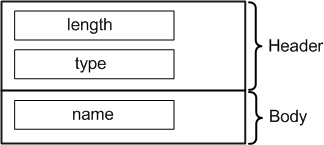

TestNameAttrType
Contains the test name. The data type is DRLTestNameAttr.

Field Name |
Data Type |
Description |
Comments |
|---|---|---|---|
length |
int |
Attribute length |
These fields form the attribute header. |
type |
short |
Attribute type |
|
name |
string |
Test name |
The displayed test name has the format
<testname>
|
Functional changes
- Introduced before SmarTest 6.3.2